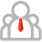

세움인사말
세움은 더불어 함께 짓는 집을 추구합니다!
-

FAITH
-
TRUST
-
CREATION
-
FREEDOM
-
PERSONALITY
- 정직 & 신뢰 & 믿음
-
집을 짓는다는 것은 단순히 건물을 짓는 일이라 생각하지 않습니다. 집을 짓는다는 것은 집을 지으실 건축주님과의 믿음을 기반으로 신뢰를 짓는다고 표현하고 싶습니다.
- 안식처 & 휴식처
-
집을 짓는다는 것은 또한 수 천년 역사 속에서 수많은 공법과 방식이 존재하고 발전되어져 왔지만 하나의 의미와 목적은 변하지 않을 것입니다.집은 세상으로부터의 고단한 몸과 마음을 쉴 수 있게 해주는 영혼에 안식처이자 휴식처 같은 곳이라 생각이 되어집니다. 어둠 속에서 비와 추위, 맹수를 피하던 동굴에서 이제는 나와 내 가족의 영혼이 쉴 수 있고 휴식 할 수 있는 공간을 세움이 만들어드리겠습니다.
- 공간의 창조와 자유로움
-
획일적인 아파트의 공간에서 이제는 개개인의 취미와 가족의 특성을 고려하여 원하는 공간의 창조와 공간에 자유로움을 만들어가고 자연과 함께 숨쉬고 자연을 편하고 안락하게 누릴 수 있는 집을 지어드리도록 노력하겠습니다.
-
집을 짓는다는 것은 신뢰를 짓는 것과 같습니다. 신뢰를 기반으로 한 행복한 집 짓기를 세움이 함께 하였으면 하는 바램입니다. 세움은 더불어 함께 짓는 집을 추구합니다.